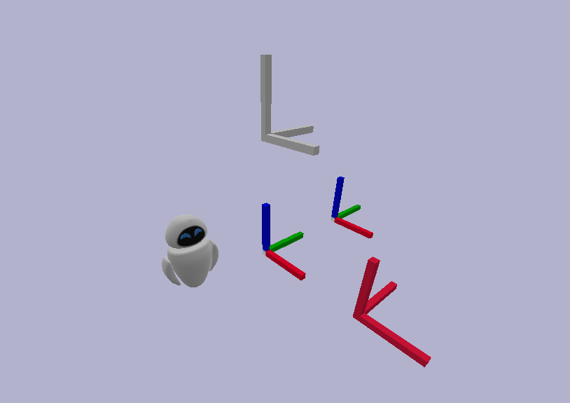

Describe your environment
There is no place like 127.0.0.1
Apply a texture
We have previously made an image texture for our frame. Now we will see how to use it with Overworld.
Use the Material Template Library
When we create an OBJ mesh, we have seen that an MTL is created as well. This file can directly contain colors but as we saw before, Bullet is not able to load them. Another possibility is to contain a link toward an image texture and that's exactly what we did just before.
As we have overwritten our previous meshes, let's try to launch Overworld without any additional modifications.
Moving once again the robot aside, you should have something like below.
From there, we can see that the OBJ meshes now have a texture! However, the STL meshes don't have any texture as they do not embed any texture data...
The second thing to be noticed is that the farme_green (the one shifted on Y) is no more green even if it is described as being green in the ontology. Indeed, if a texture is available in the MTL, Overworld will consider the texture first.
Using the ontology
For your applications, you may need to use a single mesh with different textures depending on the used instance. To do so, you can directly use the ontology to inform Overworld about the textures to apply, in the same way we did for the meshes.
Replace the previous individuals with the following.
The "frame_obj" individual is kept as it was using the default OBJ mesh.
For the "frame_stl", we have added a new relation using the hasTexture data property. It works exactly like hasMesh but points toward an image texture to be applied.
For the "frame_green", we have overwritten the mesh to use the "frame_base.obj" one which does not embed any image texture. In addition, we have linked it to the image texture.
Finally, for the "frame_red", we have also linked it to the image texture.
In the same way we did with a default mesh applied to the class, you can do it with the texture.
Relaunch Ontologenius (to update the knowledge base) and Overworld. You should have that:
It's exactly the same as before...
Indeed, as the STL meshes do not support textures, they are not considered. For the OBJ, even if it looks the same, the "frame_red" mesh has been changed for a mesh not embedding any texture. This means that Overworld correctly took the texture from the ontology.
Now that we are able to create meshes and textures, and to link them to objects in an ontology to make them spawn in the world, we have to move to non-static objects!